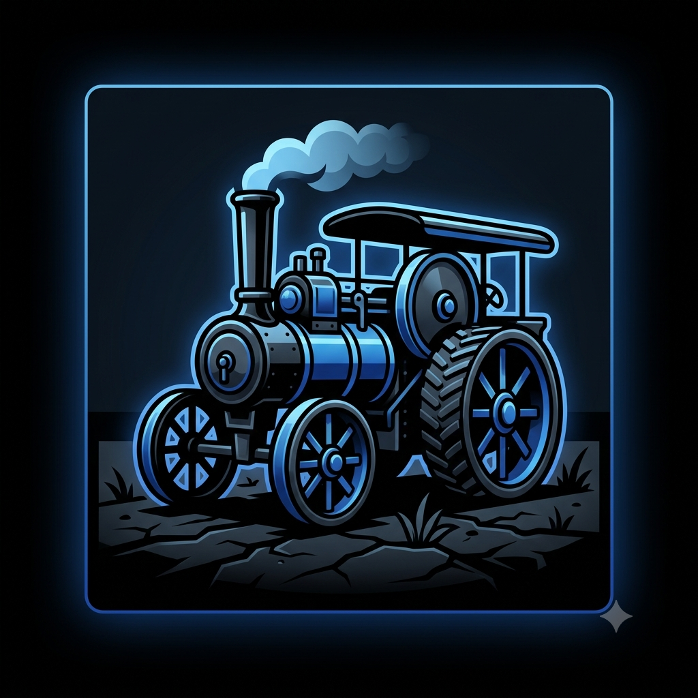
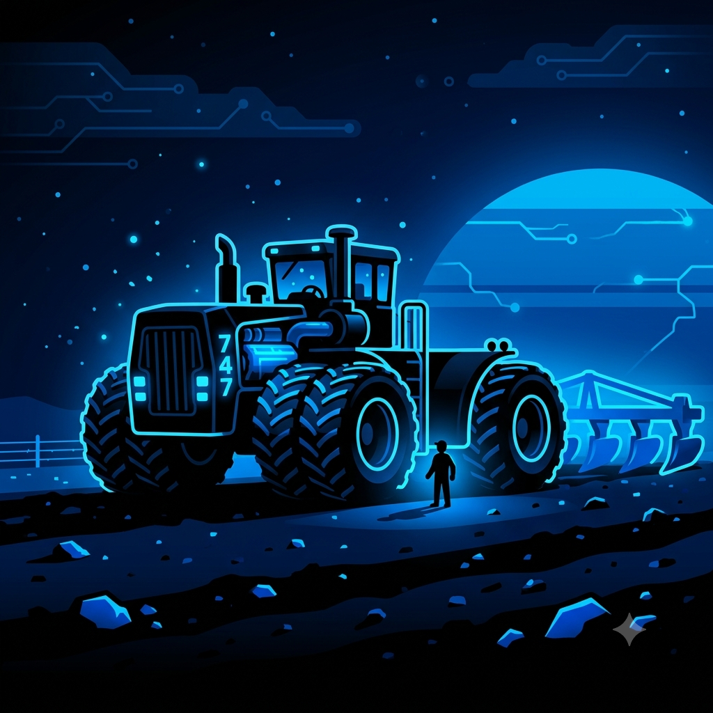
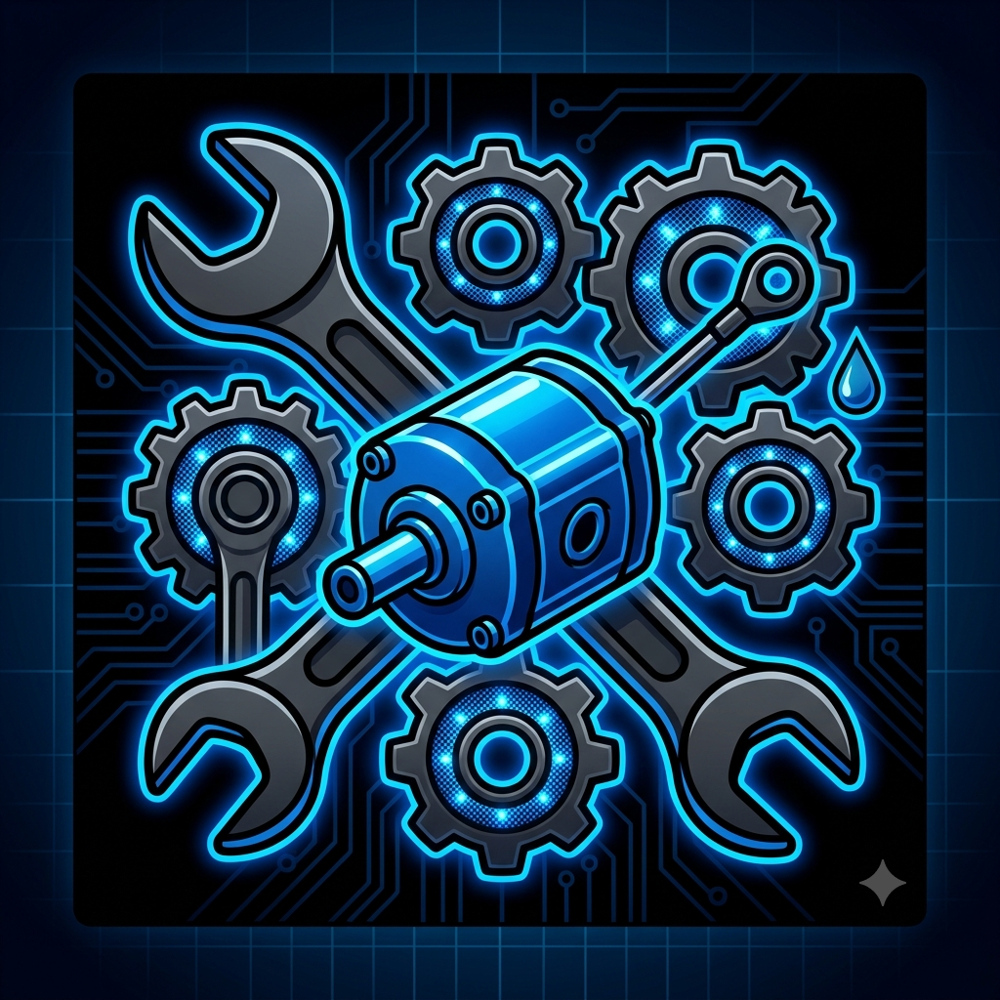
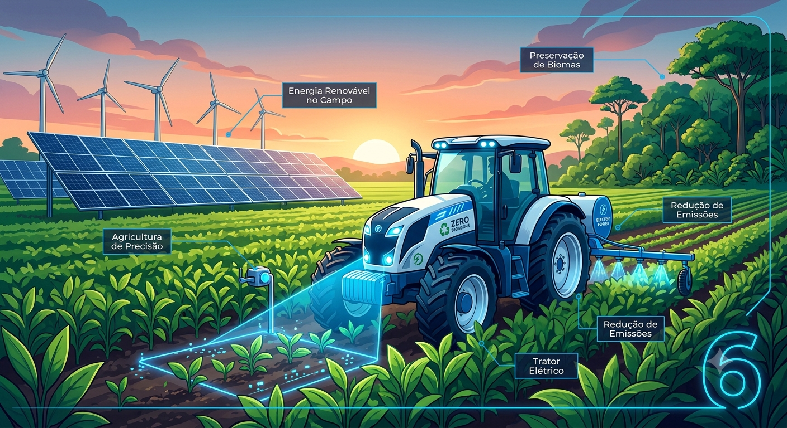

Como Surgiram os Tratores?
Por: João Gabriel Catoia Germano
Boas-vindas ao meu blog! Os primeiros tratores surgiram no final do século XIX e eram movidos a vapor, substituindo o trabalho de tração animal nas fazendas.
Tudo sobre máquinas agrícolas, potência e tecnologia no campo

Por: João Gabriel Catoia Germano
Boas-vindas ao meu blog! Os primeiros tratores surgiram no final do século XIX e eram movidos a vapor, substituindo o trabalho de tração animal nas fazendas.

Por: João Gabriel Catoia Germano
Enquanto os tratores de rodas oferecem maior mobilidade em terrenos firmes, os de esteira distribuem melhor o peso para evitar a compactação do solo.
Fonte: Pesquisa Agrícola
Por: João Gabriel Catoia Germano
A tecnologia nos campos já permite o uso de tratores guiados por GPS e inteligência artificial, capazes de operar dia e noite sem motorista a bordo.
Fonte: AgTech News

Por: João Gabriel Catoia Germano
O lendário Big Bud 747 é considerado o maior trator do mundo, capaz de puxar arados gigantescos graças ao seu motor superpotente.
Fonte: Curiosidades Agrícolas

Por: João Gabriel Catoia Germano
Revisões periódicas do sistema hidráulico e troca de óleo são fundamentais para manter a força da máquina e evitar paradas no meio da safra.
Fonte: Dicas do Campo

Por: João Gabriel Catoia Germano
Tratores movidos a biometano e eletricidade começam a chegar ao mercado, reduzindo drasticamente a emissão de carbono na agricultura moderna.
Fonte: EcoAgro